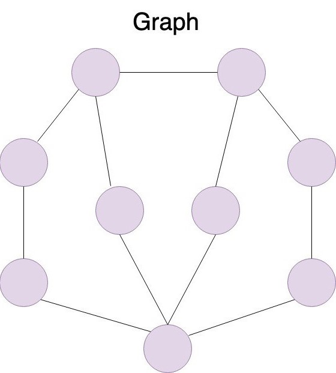
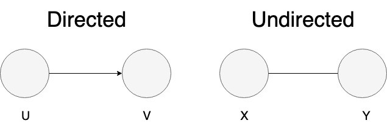
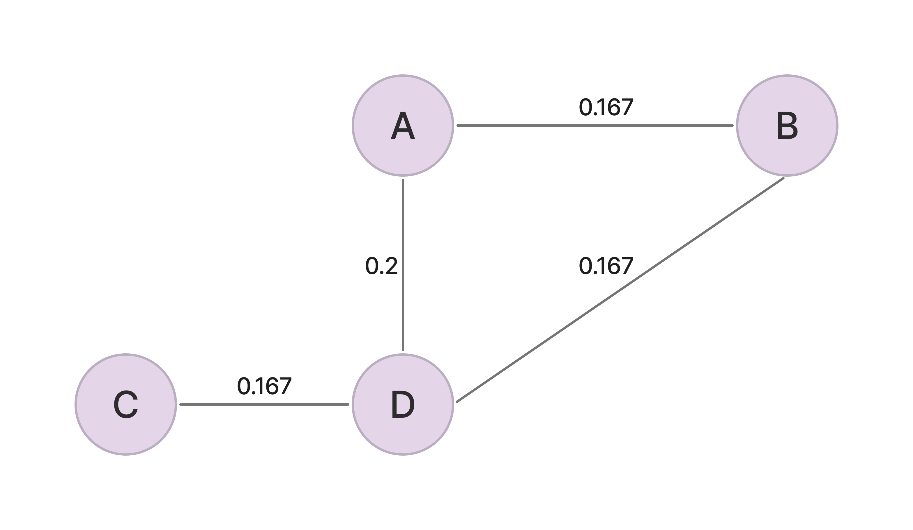

Лабораторная работа №4. Разработка системы автоматической суммаризации текстов
Дано
Текст на русском языке из датасета статей сайта Газета.ру о жизни первого космонавта Юрия Гагарина в папке assets.
Список стоп слов (предлоги, союзы, местоимения и другие неполнозначные слова русского языка). Ссылка.
Данный список взят из библиотеки для работы с естественным языком NLTK.
Необходимо реализовать алгоритм, способный для произвольного текста создавать его краткое содержание (суммаризовать).
Подходы к выделению краткого содержания текста
У большинства задач есть несколько решений. Это применимо и к выделению краткого содержания.
В зависимости от желаемой структуры краткого содержания, выделяют два подхода:
Извлекающий (extraction-based) — из исходного текста выбираются наиболее важные фразы, предложения или абзацы, совокупность которых образует краткое содержание. При этом данные фрагменты не обрабатывают, а извлекают в том порядке и виде, в каком они приведены в исходном тексте.
Достоинства: независимость от предметной области, сравнительная простота разработки.
Недостатки: извлекающий при низкой связности суммаризатор может не найти значимых связей и начнет просто пересказывать исходный текст.
Генерирующий (abstractive-based) — генерирующие методы основаны на лингвистических правилах обработки естественного языка или методах искусственного интеллекта. Они содержательно обобщают исходный документ, создавая текст, явно в нём не представленный.
Достоинства: лучшее качество результата.
Недостатки: сложность практической реализации, необходимость сбора большого количества лингвистических знаний.
В данной работе мы будем реализовывать алгоритм, основанный на извлекающем подходе.
Также, чтобы избежать путаницы, определим, что мы будем считать кратким содержанием:
Краткое содержание или summary для текста — несколько наиболее важных для текста предложений.
Для оценки значимости предложений мы будем использовать графовый алгоритм `TextRank <https://arxiv.org/pdf/1602.03606.pdf>`__.
Терминология
В данной работе Вам предлагается поработать с такой структурой организации данных, как граф. Давайте коротко рассмотрим его характеристики.
Граф — сложная нелинейная структура данных, отображающая связи между разными объектами.

На картинке выше изображен граф. Круги называются вершинами (vertex), соединяющие их линии — ребрами (edge). Как видите, может быть так, что не все вершины соединены между собой. Если у двух вершин есть общее соединяющее их ребро, то такие вершины называются инцидентными. Ребро, соединяющее вершину с самой собой, называется петлей. На данном графе нет петель.
Графы бывают ориентированные (directed) и неориентированные (undirected). В ориентированных графах ребра различаются по их направлению: есть вершина, из которой ребро исходит, и вершина, к которой оно направлено. В неориентированных графах такого различия нет.

Графы также делятся на взвешенные и невзвешенные. Во взвешенных графах ребра могут иметь разный вес. Так, например, на картинке ниже изображен взвешенный граф, в котором вершинами являются предложения:
A— “Кот спит на диване.”B— “Кот любит играть с клубком.”C— “Собака громко лает во дворе.”D— “Кот и собака гуляют.”
В данном графе ребра показывают связь одного предложения с другим по мере Жаккара, с которой мы познакомимся с Вами в дальнейшем.

В настоящей лабораторной графы будут использованы как способ представить текст. В таких графах вершинами являются предложения, а ребрами — связи (значения смежности) между ними.
Что надо сделать
Шаг 0. Начать работу над лабораторной (вместе с преподавателем на практике)
Измените оценку в файле
settings.json.Измените файлы
main.pyиstart.py.Закоммитьте изменения.
Создайте Pull request.
Реализуйте классы и функции в main.py и импортируйте их в
start.py для проверки работы кода.
В модуле start.py весь код должен быть оформлен в функции main(),
которая вызывается в конце файла.
Часть кода с чтением данного текста и стоп-слов и сохранением их в переменные
text и stop_words уже написана.
Строчку assert result нельзя изменять и перемещать в другие места кода,
она должна остаться в конце функции main().
Important
В рамках данной лабораторной работы нельзя использовать сторонние модули и модуль collections.
Important
Если на вход в функцию или метод подаются некорректные аргументы,
поднимается исключение
lab_4_summarization_textrank.main.IncorrectArgumentError
с соответствующим сообщением: "Incorrect input value".
Некорректным аргумент считается, если его тип отличается от ожидаемого типа.
О том, считаются ли пустые последовательности и словари некорректными
аргументами, будет упомянуто в релевантных шагах.
При ошибках в работе графа смежности (например, при добавлении петли или
обращении к вершине, отсутствующей в графе) поднимается исключение
lab_4_summarization_textrank.main.TextGraphError
с сообщением, соответствующим ошибке. О необходимости использования этого
исключения будет упомянуто в релевантных шагах.
Шаг 1. Творческое задание
Important
Выполнение Шага 1 соответствует 4 баллам.
Задание анонсируется преподавателем на практике. Подробная информация о задании и сроки приёмки публикуются в канале курса. Выполнение задания также является обязательным для получения оценки 6 и выше.
Шаг 2. Создание абстракции для предложения
Мы научились предобрабатывать и кодировать отдельные слова, однако в задаче извлекающей суммаризации базовой единицей текста выступает целое предложение. Так как в данной работе мы будем оперировать предложениями, причём в разных их проявлениях (сырой текст, предобработанный, закодированный), имеет смысл создать абстракцию, которая будет представлять предложение из реального мира в коде.
За это отвечает класс lab_4_summarization_textrank.main.Sentence.
Шаг 2.1. Инициализация класса Sentence
Инициализатор lab_4_summarization_textrank.main.Sentence.__init__() принимает
параметры text (текст предложения) и position (позиция предложения в тексте;
нумерация позиций начинается с нуля).
Внутри инициализатора необходимо сохранить пришедшие на вход аргументы в одноимённые
защищённые атрибуты класса: _text и _position, а также создать следующие
защищённые атрибуты класса, инициализированные пустыми кортежами:
_preprocessed— предобработанная версия предложения;_encoded— закодированная версия предложения.
Пример создания экземпляра класса:
sentence = Sentence("В лесу родилась ёлочка.", 0)
Шаг 2.2. Реализация методов доступа и изменения атрибутов
В объектно-ориентированном программировании прямой доступ к внутренним полям объекта извне
обычно ограничивают с помощью защищённых атрибутов (начинающихся с _), чтобы защитить
состояние объекта от некорректных изменений. Взаимодействие с такими атрибутами строится
через единый публичный интерфейс — геттеры (методы чтения значения) и сеттеры
(методы записи значения с предварительной проверкой корректности данных).
Реализуйте следующие геттеры и сеттеры для класса
lab_4_summarization_textrank.main.Sentence:
геттеры:
lab_4_summarization_textrank.main.Sentence.get_text(),lab_4_summarization_textrank.main.Sentence.get_position(),lab_4_summarization_textrank.main.Sentence.get_preprocessed(),lab_4_summarization_textrank.main.Sentence.get_encoded();сеттеры:
lab_4_summarization_textrank.main.Sentence.set_preprocessed(),lab_4_summarization_textrank.main.Sentence.set_encoded().
Методы set_preprocessed и set_encoded принимают новое значение,
проверяют его тип и сохраняют в соответствующий защищённый атрибут экземпляра.
Important
При вызове сеттеров должна происходить проверка типа входных данных:
для
lab_4_summarization_textrank.main.Sentence.set_preprocessed()проверяется, что передана последовательность, все элементы которой являются строками;для
lab_4_summarization_textrank.main.Sentence.set_encoded()проверяется, что передана последовательность, все элементы которой являются целыми числами.
Если условие не выполняется, поднимается
lab_4_summarization_textrank.main.IncorrectArgumentError.
Обратите внимание, что lab_4_summarization_textrank.main.Sentence.set_encoded() и
lab_4_summarization_textrank.main.Sentence.set_preprocessed() могут принимать пустые
последовательности.
Шаг 2.3. Описание предложения
В данной лабораторной работе Вы будете много работать с пользовательскими классами.
Чтобы узнать, что скрывается за интерфейсом экземпляра
lab_4_summarization_textrank.main.Sentence, в общем случае понадобится
вызывать один из геттеров класса и затем функцию print() от полученного результата.
Чтобы упростить работу с классами, реализуйте служебный метод
lab_4_summarization_textrank.main.Sentence.__str__(),
который возвращает строковое представление предложения в формате
Sentence(text='Привет.', position=0).
Используйте значения атрибутов _text и _position.
Шаг 3. Выделение и предобработка предложения
За разделение текста на предложения и очистку каждого предложения отвечает класс
lab_4_summarization_textrank.main.SentencePreprocessor.
Шаг 3.1. Инициализация класса SentencePreprocessor
Инициализатор lab_4_summarization_textrank.main.SentencePreprocessor.__init__()
принимает параметры stop_words (последовательность стоп-слов) и punctuation
(последовательность символов пунктуации, подлежащих удалению).
Внутри инициализатора необходимо сохранить пришедшие на вход аргументы в одноимённые
защищённые атрибуты класса: _stop_words и _punctuation.
Допускается передача пустых последовательностей стоп-слов и знаков пунктуации.
Пример создания экземпляра класса:
stop_words = ('в', 'на', 'и')
punctuation = ('.', ',', '!', '?')
sentence_preprocessor = SentencePreprocessor(stop_words, punctuation)
Шаг 3.2. Разделение текста на предложения
Метод lab_4_summarization_textrank.main.SentencePreprocessor._split_by_sentence()
разделяет текст на отдельные предложения. Метод принимает на вход неочищенный текст и
возвращает кортеж предложений.
Important
Каждый элемент возвращаемого кортежа — экземпляр класса
lab_4_summarization_textrank.main.Sentence.
Important
Критерий разделения текста на предложения: один из знаков препинания завершения
предложения (.!?), за которым следуют пробел(ы) или символ(ы) новой
строки и заглавная буква. Перед разделением замените в тексте символы переноса
строки \n и повторяющиеся пробелы на одиночный пробел.
Шаг 3.3. Очистка и токенизация текста
Метод lab_4_summarization_textrank.main.SentencePreprocessor._clean_and_tokenize()
очищает текст от знаков препинания из атрибута _punctuation, приводит его к нижнему
регистру и делит на отдельные токены по пробелу. Метод возвращает кортеж выделенных токенов.
Шаг 3.4. Удаление стоп-слов
Метод lab_4_summarization_textrank.main.SentencePreprocessor._remove_stop_words()
принимает последовательность токенов и возвращает кортеж токенов, не содержащий стоп-слов из
атрибута _stop_words.
Принимаемая последовательность может быть пустой.
Шаг 3.5. Очистка произвольного текста
Метод lab_4_summarization_textrank.main.SentencePreprocessor.preprocess_text()
принимает неочищенную строку и возвращает кортеж очищенных токенов без стоп-слов,
последовательно вызывая
lab_4_summarization_textrank.main.SentencePreprocessor._clean_and_tokenize() и
lab_4_summarization_textrank.main.SentencePreprocessor._remove_stop_words().
Шаг 3.6. Предобработка предложений
Метод lab_4_summarization_textrank.main.SentencePreprocessor._preprocess_sentences()
предобрабатывает последовательность предложений с помощью
lab_4_summarization_textrank.main.SentencePreprocessor.preprocess_text().
Метод устанавливает для каждого предложения его предобработанную версию с помощью
сеттера lab_4_summarization_textrank.main.Sentence.set_preprocessed().
Important
Необходимо использовать методы
lab_4_summarization_textrank.main.Sentence.get_text() и
lab_4_summarization_textrank.main.Sentence.set_preprocessed() для
взаимодействия с экземплярами класса
lab_4_summarization_textrank.main.Sentence.
Последовательность предложений на входе может быть пустая.
Шаг 3.7. Извлечение предложений из текста
Метод
lab_4_summarization_textrank.main.SentencePreprocessor.get_sentences()
является частью публичного интерфейса класса
lab_4_summarization_textrank.main.SentencePreprocessor.
Он принимает на вход текст и возвращает кортеж предобработанных предложений.
Important
Каждый элемент возвращаемого кортежа — экземпляр класса
lab_4_summarization_textrank.main.Sentence, у которого заполнены поля
_text, _position и _preprocessed.
Important
Необходимо использовать методы
lab_4_summarization_textrank.main.SentencePreprocessor._split_by_sentence() и
lab_4_summarization_textrank.main.SentencePreprocessor._preprocess_sentences().
Шаг 3.8. Описание обработчика предложений
Аналогично lab_4_summarization_textrank.main.Sentence.__str__(),
реализуйте служебный метод
lab_4_summarization_textrank.main.SentencePreprocessor.__str__(),
который возвращает строковое представление класса в формате
SentencePreprocessor(stop_words=4, punctuation=0), где числа обозначают
длину последовательностей атрибутов _stop_words и _punctuation.
Шаг 4. Кодирование предложения
За кодирование токенов в предложениях отвечает класс
lab_4_summarization_textrank.main.SentenceEncoder.
Шаг 4.1. Инициализация класса SentenceEncoder
Инициализатор lab_4_summarization_textrank.main.SentenceEncoder.__init__() не
принимает аргументов и создаёт следующие атрибуты:
_word2id— защищённый словарь соответствий видатокен -> идентификатор;_id2word— защищённый словарь соответствий видаидентификатор -> токен;last— целочисленный счётчик последнего присвоенного идентификатора,инициализируемый числом 999.
Пример создания экземпляра класса:
sentence_encoder = SentenceEncoder()
Шаг 4.2. Заполнение атрибутов класса
Метод lab_4_summarization_textrank.main.SentenceEncoder._learn_indices()
принимает последовательность токенов и дополняет атрибуты _word2id и _id2word. Метод
ничего не возвращает. Идентификаторы присваиваются последовательно, по порядку первого
появления уникальных токенов, начиная с 1000.
Принимаемая последовательность токенов может быть пустой.
Рассмотрим пример. Пусть дана последовательность токенов:
('в', 'лесу', 'родилась', 'ёлочка', 'в', 'лесу', 'она', 'росла').
Тогда атрибут _word2id будет выглядеть так:
{'в': 1000, 'лесу': 1001, 'родилась': 1002, 'ёлочка': 1003, 'она': 1004, 'росла': 1005}.
Important
lab_4_summarization_textrank.main.SentenceEncoder обрабатывает
предложения одно за другим, поэтому метод
lab_4_summarization_textrank.main.SentenceEncoder._learn_indices()
должен дополнять атрибуты _word2id и _id2word, не перезаписывая уже
сохранённые соответствия. Атрибут last изменяется соответственно.
Шаг 4.3. Кодирование предложений
Метод lab_4_summarization_textrank.main.SentenceEncoder.encode_sentences()
принимает последовательность предложений (экземпляров класса
lab_4_summarization_textrank.main.Sentence) и для каждого из них формирует
закодированную версию на основе его предобработанных токенов.
Последовательность предложений может быть пустой.
Для каждого предобработанного предложения, получаемого через
lab_4_summarization_textrank.main.Sentence.get_preprocessed()
вызывается
lab_4_summarization_textrank.main.SentenceEncoder._learn_indices().
Метод изменяет каждый переданный экземпляр
lab_4_summarization_textrank.main.Sentence на месте,
записывая полученный кортеж идентификаторов в его атрибут _encoded через
lab_4_summarization_textrank.main.Sentence.set_encoded().
Шаг 4.4. Описание кодировщика предложений
Аналогично предыдущим классам, реализуйте служебный метод
lab_4_summarization_textrank.main.SentenceEncoder.__str__(),
который возвращает строковое представление класса в формате
SentenceEncoder(vocabulary_size=5), где число обозначает размер
словарей с парами индексов и токенов.
Шаг 5. Демонстрация выделения и кодирования предложений
Important
Выполнение Шагов 1-5 соответствует 6 баллам.
В файле start.py в переменной text находится одна из статей.
Выделите из неё предложения с помощью
lab_4_summarization_textrank.main.SentencePreprocessor и закодируйте их
с помощью lab_4_summarization_textrank.main.SentenceEncoder.
Шаг 6. Вычисление метрики смежности
Предобработанное предложение — последовательность из токенов. Существует множество способов узнать, насколько две последовательности элементов похожи друг на друга.
В данной работе Вы реализуете меру Жаккара (Jaccard Similarity/Index), которая позволяет понять, насколько два множества элементов похожи.
Формула выглядит следующим образом:
Объяснение:
\(A\) и \(B\) — множества элементов;
\(|A\cap B|\) — количество уникальных элементов, которые являются общими для обоих множеств;
\(|A\cup B|\) — общее количество уникальных элементов в обоих множествах.
Пример:
Множество \(A\) — \(\{0, 1, 2, 5, 6\}\)
Множество \(B\) — \(\{0, 2, 3, 4, 5, 7, 9\}\)
Реализуйте функцию lab_4_summarization_textrank.main.calculate_similarity(),
рассчитывающую значение меры Жаккара для двух последовательностей элементов.
Функция принимает на вход две последовательности элементов и возвращает значение меры Жаккара. На данном этапе проверку типов элементов осуществлять не нужно, только проверку на то, что принимаемый объект — последовательность.
Обратите внимание, что любой из аргументов может быть пустым. В случае,
если хотя бы одна из входных последовательностей пустая, значение меры
Жаккара равно 0.0.
Шаг 7. Представление текста в виде графа смежности предложений
Для выделения важных предложений, нам нужно представить текст в виде графа:
Вершинами графа будут предложения (экземпляры класса
lab_4_summarization_textrank.main.Sentence);Рёбрами будут значения смежности между предложениями, вычисленные с помощью функции
lab_4_summarization_textrank.main.calculate_similarity()из предыдущего шага.
В этом шаге Вы будете реализовывать класс
lab_4_summarization_textrank.main.TextGraph, представляющий
такой граф смежности.
Граф смежности задаётся в виде таблицы (матрицы смежности). В нашем случае незаполненная таблица выглядит вот так.
A |
B |
C |
D |
|
|---|---|---|---|---|
A |
||||
B |
||||
C |
||||
D |
В ней одинаковое количество столбцов и строк. При этом каждая строка и
каждый столбец соответствуют одной какой-либо вершине графа. Например,
на пересечении строки, соответствующей вершине A, и столбца,
соответствующего вершине B, будет записано число, отражающее значение
смежности между этими вершинами, являющимися предложениями. Давайте
посмотрим, как она может выглядеть в заполненном виде.
Представим, что каждая буква представляет вершину графа — предложение:
A— “Кот спит на диване.”B— “Кот любит играть с клубком.”C— “Собака громко лает во дворе.”D— “Кот и собака гуляют.”
Заполнение матрицы происходит в три шага:
Предобработка и кодирование. При помощи классов
lab_4_summarization_textrank.main.SentencePreprocessorиlab_4_summarization_textrank.main.SentenceEncoderпредложения очищаются от стоп-слов и преобразуются в кортежи числовых ID:encoded_sentences = { 'A': (0, 1, 2), # ('кот', 'спит', 'диване') 'B': (0, 3, 4, 5), # ('кот', 'любит', 'играть', 'клубком') 'C': (6, 7, 8, 9), # ('собака', 'громко', 'лает', 'дворе') 'D': (0, 6, 10), # ('кот', 'собака', 'гуляют') }
Попарный расчёт меры Жаккара. Для каждой пары предложений вызывается функция
lab_4_summarization_textrank.main.calculate_similarity():AиB: общий ID 0 , всего 6 уникальных ID —1 / 6 ≈ 0.167;AиC: общих ID нет — 0.0;AиD: общий ID 0, всего 5 уникальных ID —1 / 5 = 0.2;BиC: общих ID нет — 0.0;BиD: общий ID 0, всего 6 уникальных ID —1 / 6 ≈ 0.167;CиD: общий ID 6, всего 6 уникальных ID —1 / 6 ≈ 0.167.
Заполнение матрицы смежности. Полученные значения записываются на пересечение соответствующих строк и столбцов. При этом на диагонали матрицы сходство предложения с самим собой равно 1.0.
A |
B |
C |
D |
|
|---|---|---|---|---|
A |
1.0 |
0.167 |
0.0 |
0.2 |
B |
0.167 |
1.0 |
0.0 |
0.167 |
C |
0.0 |
0.0 |
1.0 |
0.167 |
D |
0.2 |
0.167 |
0.167 |
1.0 |
Далее описаны шаги реализации графа смежности.
Шаг 7.1. Инициализация класса TextGraph
Инициализатор lab_4_summarization_textrank.main.TextGraph.__init__() не
принимает аргументов и создаёт защищённые атрибуты:
_vertices— список вершин графа (экземпляровlab_4_summarization_textrank.main.Sentence), пустой при инициализации;_matrix— матрицу смежности, кодирующую связи между вершинами (пустой список при инициализации; ожидаемый тип данных:list[list[float]]).
Important
В матрице смежности _matrix, которую Вы реализуете, должны храниться только
строки и столбцы с вещественными числами (значениями смежности). Названия колонок и
строк в примере выше даны исключительно для наглядности.
Пример создания экземпляра класса:
graph = TextGraph()
Шаг 7.2. Добавление вершины
Реализуйте вспомогательный метод
lab_4_summarization_textrank.main.TextGraph._add_vertex(). Метод принимает
вершину (экземпляр lab_4_summarization_textrank.main.Sentence).
Если такой объект ещё не сохранён в _vertices, метод добавляет его в _vertices и
синхронно расширяет матрицу _matrix (добавляет новый столбец и новую строку,
заполненные нулями 0.0). Вычисление весов рёбер в этом методе не выполняется —
за расчёт смежности отвечает метод
lab_4_summarization_textrank.main.TextGraph._add_edge().
Повторное добавление уже существующей вершины не должно изменять граф. Метод ничего не
возвращает.
Шаг 7.3. Проверка вершины
В дальнейшем Вам понадобится убедиться в том, что вершина случайно не сравнилась с самой собой.
Так как вершины являются экземплярами класса lab_4_summarization_textrank.main.Sentence,
проверку удобнее всего совершать внутренне. Дополните поведение класса реализацией служебного метода
lab_4_summarization_textrank.main.Sentence.__eq__(),
который вызывается каждый раз, когда Вы проверяете эквивалентность с помощью
== и !=. В качестве критериев эквивалентности двух предложений
используйте значения атрибутов _text и _position. То есть, внутри метода от Вас требуется
сравнить значения атрибутов _text и _position текущего предложения и предложения, переданного
как аргумент, и вернуть результат.
Определение lab_4_summarization_textrank.main.Sentence.__eq__() для пользовательского
класса по умолчанию делает экземпляры класса нехэшируемыми. Это плохо, так как в дальнейшем мы
будем использовать вершины (предложения) в качестве ключей словаря, а, как мы знаем, ключи словаря
обязательно должны быть хэшируемы.
Реализуйте метод lab_4_summarization_textrank.main.Sentence.__hash__(),
который решает эту проблему. Возвращаемое значение представляет собой хэш, взятый от кортежа
значений атрибутов _text и _position.
Шаг 7.4. Добавление ребра
В данной лабораторной граф является изменяемой структурой данных: мы можем добавлять вершины и ребра после инициализации объекта.
Ответственным за это является метод
lab_4_summarization_textrank.main.TextGraph._add_edge(). Он принимает на вход
две вершины.
Important
Петли, то есть ребра, соединяющие вершину с самой собой, добавлять нельзя.
Если в качестве обоих входных аргументов переданы одинаковые вершины,
поднимается исключение lab_4_summarization_textrank.main.TextGraphError.
В случае, если какой-либо из вершин, пришедших в качестве аргумента, в графе ещё нет,
необходимо добавить её с помощью метода
lab_4_summarization_textrank.main.TextGraph._add_vertex().
Далее метод вычисляет вес ребра для закодированной формы обоих вершин
(получаемой из lab_4_summarization_textrank.main.Sentence.get_encoded())
с помощью функции lab_4_summarization_textrank.main.calculate_similarity()
и сохраняет полученное значение в симметричные ячейки матрицы
_matrix (на пересечении строки первой вершины и столбца второй, а также строки второй
вершины и столбца первой). Метод ничего не возвращает.
Шаг 7.5. Получение значения метрики смежности
Для использования графа необходимо иметь возможность запросить у него
информацию о том, насколько связаны две вершины друг с другом. Для этого нужно определить метод
lab_4_summarization_textrank.main.TextGraph.get_similarity_score(). Метод
принимает на вход два аргумента: вершина №1 и вершина №2.
Метод возвращает значение смежности между двумя вершинами из графа смежности. Он не вызывает другие методы и не обновляет атрибуты класса.
Если какая-либо из запрошенных вершин отсутствует в графе, поднимается
исключение lab_4_summarization_textrank.main.TextGraphError.
Шаг 7.6. Получение информации обо всех вершинах
Также необходимо реализовать возможность узнать, какие вершины есть в
графе. Для этого следует реализовать метод
lab_4_summarization_textrank.main.TextGraph.get_vertices(). Он не
принимает никаких дополнительных аргументов. Возвращаемым значением
является кортеж вершин сохраненного графа.
Шаг 7.7. Подсчет количества смежных вершин
Для алгоритма выявления важных предложений важно знать,
со сколькими другими вершинами графа каждая конкретная вершина соединена ребром
(имеет ненулевую смежность). Это значение называется InOut score. При суммаризации
мы считаем, что две различные вершины соединены ребром, если значение метрики смежности для них
больше 0.
Метод lab_4_summarization_textrank.main.TextGraph.calculate_inout_score()
принимает на вход вершину и возвращает количество других вершин графа, связанных с ней
ребром положительного веса. Если на вход приходит вершина, которой нет в графе, поднимается
исключение lab_4_summarization_textrank.main.TextGraphError.
Шаг 7.8. Заполнение экземпляра графа
Для упрощения работы с экземпляром графа реализуем метод
lab_4_summarization_textrank.main.TextGraph.build(),
который заполнит его всеми вершинами и ребрами, которые можно извлечь из
последовательности предложений.
Метод принимает на вход непустую последовательность предложений.
При заполнении графа обязательно используйте метод
lab_4_summarization_textrank.main.TextGraph._add_vertex(),
чтобы добавить каждое входное предложение в качестве вершины.
Внутри метода происходит выделение пар предложений и добавление
соответствующих ребер в граф. Необходимо обращаться к методу
lab_4_summarization_textrank.main.TextGraph._add_edge().
Метод lab_4_summarization_textrank.main.TextGraph.build() ничего не возвращает.
Обратите внимание, что текст может содержать одинаковые предложения.
Метод не должен передавать в
lab_4_summarization_textrank.main.TextGraph._add_edge() одинаковые предложения.
Шаг 7.9. Отбор лучших вершин
Проведите отбор лучших предложений для графа.
Для этого реализуйте метод
lab_4_summarization_textrank.main.TextGraph.get_top_n_sentences(),
который принимает целое положительное число n и возвращает кортеж из n
предложений с наибольшей суммой значений смежности в матрице _matrix.
Если на момент вызова метода в графе нет вершин, поднимается
исключение lab_4_summarization_textrank.main.TextGraphError.
Шаг 7.10. Описание графа
Реализуйте служебные методы класса lab_4_summarization_textrank.main.TextGraph:
lab_4_summarization_textrank.main.TextGraph.__len__()— возвращает целочисленное количество вершин в графе;lab_4_summarization_textrank.main.TextGraph.__str__()— возвращает строковое представление графа в форматеTextGraph(vertices=4), где число означает количество вершин в графе (его размер).
Благодаря этому вызов len(graph) вернёт количество предложений в графе,
а print(graph) выведет его краткое описание.
Шаг 8. Наивная суммаризация
Класс lab_4_summarization_textrank.main.NaiveSummarizer реализует базовый
(наивный) графовый суммаризатор и определяет общий публичный интерфейс для графовых
алгоритмов суммаризации.
Шаг 8.1. Инициализация класса NaiveSummarizer
Инициализатор lab_4_summarization_textrank.main.NaiveSummarizer.__init__()
принимает построенный экземпляр lab_4_summarization_textrank.main.TextGraph,
который необходимо сохранить в защищённый атрибут _graph.
Пример создания экземпляра класса:
summarizer = NaiveSummarizer(graph)
Шаг 8.2. Отбор лучших предложений
Реализуйте метод lab_4_summarization_textrank.main.NaiveSummarizer._get_top_n_sentences(),
отбирающий лучшие предложения путём вызова метода
lab_4_summarization_textrank.main.TextGraph.get_top_n_sentences()
от сохранённого экземпляра графа.
Шаг 8.3. Составление краткого содержания
Метод lab_4_summarization_textrank.main.NaiveSummarizer.summarize()
упорядочивает переданные предложения по возрастанию их исходной позиции в тексте
(lab_4_summarization_textrank.main.Sentence.get_position()), извлекает их текст с
помощью lab_4_summarization_textrank.main.Sentence.get_text() и объединяет через
символ переноса строки \n.
Для примера возьмем матрицу из предыдущего шага:
A |
B |
C |
D |
|
|---|---|---|---|---|
A |
1.0 |
0.167 |
0.0 |
0.2 |
B |
0.167 |
1.0 |
0.0 |
0.167 |
C |
0.0 |
0.0 |
1.0 |
0.167 |
D |
0.2 |
0.167 |
0.167 |
1.0 |
- Метод
lab_4_summarization_textrank.main.TextGraph.get_top_n_sentences() считает сумму значений смежности по каждой строке матрицы:
scores = {
'A': 1.367, # 1.0 + 0.167 + 0.0 + 0.2
'B': 1.334, # 0.167 + 1.0 + 0.0 + 0.167
'C': 1.167, # 0.0 + 0.0 + 1.0 + 0.167
'D': 1.534, # 0.2 + 0.167 + 0.167 + 1.0
}
После вызова _get_top_n_sentences(2) возвращаются два предложения с наибольшей суммой:
top_sentences = ('D', 'A')
В результате summarize(n_sentences=2) сортирует выбранные предложения в исходном
порядке текста и возвращает их, соединённые символом \n (сначала A, затем D).
Шаг 8.4. Описание наивного суммаризатора
Аналогично предыдущим классам, реализуйте служебный метод
lab_4_summarization_textrank.main.NaiveSummarizer.__str__(),
который возвращает строковое представление класса в формате
NaiveSummarizer(graph=TextGraph(vertices=53)).
Шаг 9. Демонстрация работы алгоритма NaiveSummarizer
Important
Выполнение Шагов 1-9 соответствует 8 баллам.
Продемонстрируйте выделение краткого содержания для текста, хранящегося
в переменной text, в файле start.py.
После Шага 5 текст должен быть предобработан, а предложения закодированы.
Постройте граф lab_4_summarization_textrank.main.TextGraph,
затем создайте экземпляр lab_4_summarization_textrank.main.NaiveSummarizer
на основе этого графа и получите краткое содержание текста из 5 предложений.
Если текст короче, получите содержание на основе длины графа.
Шаг 10. Алгоритм TextRank
Алгоритм TextRank оценивает важность каждой вершины графа следующим образом: предложение считается тем важнее, чем с большим количеством других важных предложений оно связано.
lab_4_summarization_textrank.main.TextRankSummarizer наследуется от
lab_4_summarization_textrank.main.NaiveSummarizer и использует тот же
lab_4_summarization_textrank.main.TextGraph. Новый граф для TextRank создавать не
нужно. Класс оптимизированного суммаризатора использует интерфейс базового суммаризатора
и дополняет его собственными методами и атрибутами.
text_rank = TextRankSummarizer(text_graph)
text_rank.train()
summary = text_rank.summarize(10)
Шаг 10.1. Инициализация класса TextRankSummarizer
В инициализаторе lab_4_summarization_textrank.main.TextRankSummarizer.__init__()
вызовите инициализатор родительского класса
lab_4_summarization_textrank.main.NaiveSummarizer.__init__().
Передайте ему получаемый аргумент графа
lab_4_summarization_textrank.main.TextGraph.
Дополнительно задайте защищённые атрибуты параметров алгоритма:
_damping_factor—0.85(коэффициент затухания \(d\));_convergence_threshold—0.0001(порог сходимости алгоритма);_max_iter—50(максимальное число итераций);_scores— словарь оценок значимости вершин (инициализируется пустым словарём).
Пример создания экземпляра класса:
text_rank = TextRankSummarizer(graph)
Шаг 10.2. Обновление веса вершины
Реализуйте метод
lab_4_summarization_textrank.main.TextRankSummarizer._update_vertex_score(),
который пересчитывает оценку значимости одной вершины графа на текущей итерации алгоритма
TextRank.
Входные аргументы метода:
vertex(lab_4_summarization_textrank.main.Sentence) — вершина \(V_i\), для которой вычисляется новый вес.incidental_vertices(последовательность экземпляровlab_4_summarization_textrank.main.Sentence) — список вершин \(InOut(V_i)\), имеющих положительную смежность сvertex. Список вершин может быть пустым.current_scores(dict[Sentence, float]) — словарь оценок всех вершин с предыдущей итерации.Словарь оценок не может быть пустым. Проверять элементы словаря не требуется.
Формула расчёта веса вершины:
Пошаговый алгоритм вычисления нового веса:
Инициализируйте переменную накопителя суммы для вершины.
Для каждой смежной вершины из
incidental_vertices:получите количество её смежных рёбер с помощью метода
lab_4_summarization_textrank.main.TextGraph.calculate_inout_score();- прибавьте к переменной накопителя суммы частное деления веса вершины с
предыдущей итерации (значения аргумента
current_scoresдля вершины) на количество смежных рёбер.
Вычислите итоговый вес вершины с учётом коэффициента затухания
Обновите
self._scoresновым весом.
Шаг 10.3. Итеративное обучение TextRank
Реализуйте метод lab_4_summarization_textrank.main.TextRankSummarizer.train():
назначьте всем вершинам из lab_4_summarization_textrank.main.TextGraph.get_vertices()
начальный вес 1.0 в словаре _scores и итеративно пересчитывайте оценки с помощью
lab_4_summarization_textrank.main.TextRankSummarizer._update_vertex_score(), пока
суммарное абсолютное изменение оценок за итерацию не станет меньше или равно
_convergence_threshold либо пока не будет достигнуто _max_iter итераций.
Вам необходимо:
Получить все вершины графа и назначить каждой начальный вес
1.0в словареself._scores.В начале каждой итерации (не более
_max_iter) сохранить копию оценок предыдущего шага (prev_score), чтобы при расчётах опираться только на оценки предыдущей итерации и обновление весов происходило синхронно.Для каждой вершины собрать список других похожих вершин (тех, у которых значение смежности с ней строго больше
0).Обновить вес вершины в
self._scores, передав её, список похожих вершин иprev_score.Вычислить сумму модулей разностей между старыми и новыми весами всех вершин. Если сумма не превышает
_convergence_threshold, завершить обучение досрочно; иначе вернуться на шаг 2.
В данном методе необходимо использовать методы
lab_4_summarization_textrank.main.TextGraph.get_vertices(),
lab_4_summarization_textrank.main.TextGraph.get_similarity_score() и
lab_4_summarization_textrank.main.TextRankSummarizer._update_vertex_score().
Например, по матрице сходства из предыдущего шага можно выделить следующие связи:
A— связана сBиD(\(|InOut(A)| = 2\));B— связана сAиD(\(|InOut(B)| = 2\));C— связана только сD(\(|InOut(C)| = 1\));D— связана сA,BиC(\(|InOut(D)| = 3\)).
Обучение начинается с веса 1.0 для каждой вершины:
Итерация 1:
Aотдаёт по1.0 / 2 = 0.5вершинамBиD;Bотдаёт по1.0 / 2 = 0.5вершинамAиD;Cотдаёт1.0 / 1 = 1.0вершинеD;Dотдаёт по1.0 / 3 ≈ 0.333вершинамA,BиC.
Собираем входящие доли, умножаем на
d = 0.85и прибавляем базовый вес1 - d = 0.15:D—0.15 + 0.85 * (0.5 + 0.5 + 1.0) = 1.85A—0.15 + 0.85 * (0.5 + 0.333) ≈ 0.858B—0.15 + 0.85 * (0.5 + 0.333) ≈ 0.858C—0.15 + 0.85 * 0.333 ≈ 0.433
Как можно видеть, вершина
Dрезко приобретает максимальное значение, потому что связана со всеми остальными вершинами.Итерация 2:
D—0.15 + 0.85 * (0.858 / 2 + 0.858 / 2 + 0.433 / 1) ≈ 1.247A—0.15 + 0.85 * (0.858 / 2 + 1.85 / 3) ≈ 1.039B—0.15 + 0.85 * (0.858 / 2 + 1.85 / 3) ≈ 1.039C—0.15 + 0.85 * (1.85 / 3) ≈ 0.674
Здесь вес вершины
Dзатухает, а остальные вершиныA,BиC, наоборот, приобретают больший вес. На следующих итерациях изменения постепенно затухают, пока сумма модулей разностей всех весов не станет меньше порога0.0001или не будет достигнут максимум итераций.
Метод обновляет _scores и ничего не возвращает.
Шаг 10.4. Отбор лучших предложений для суммаризации
Напомним, что lab_4_summarization_textrank.main.TextRankSummarizer
имеет тот же интерфейс, что и его класс-родитель
lab_4_summarization_textrank.main.NaiveSummarizer, а значит имеет
публичный метод lab_4_summarization_textrank.main.NaiveSummarizer.summarize().
text_rank = TextRankSummarizer(text_graph)
text_rank.train()
summary = text_rank.summarize(10)
Теперь, когда мы описали работу нового алгоритма поиска важных предложений,
нам нужно подогнать новое решение под реализацию
lab_4_summarization_textrank.main.NaiveSummarizer.summarize() — этот метод
только выводит полученный результат.
Переопределите метод
lab_4_summarization_textrank.main.TextRankSummarizer._get_top_n_sentences().
Он отбирает предложения с наибольшими весами из _scores.
Результат этого отбора будет использован для построения краткого содержания в
lab_4_summarization_textrank.main.NaiveSummarizer.summarize().
Шаг 10.5. Описание суммаризатора TextRank
Аналогично предыдущим классам, реализуйте служебный метод
lab_4_summarization_textrank.main.TextRankSummarizer.__str__(),
который возвращает строковое представление класса в формате
TextRankSummarizer(
graph=TextGraph(vertices=53),
damping_factor=0.85,
convergence_threshold=0.0001,
max_iter=50
)
Так как теперь размер исходного графа находится в нескольких оболочках
описания, будет удобно реализовать метод
lab_4_summarization_textrank.main.TextRankSummarizer.__len__(),
который сразу возвращает количество вершин в используемом графе, не требуя
обращения ко защищённому состоянию.
Шаг 11. Демонстрация алгоритма TextRank
Important
Выполнение Шагов 1-11 соответствует 10 баллам.
Продемонстрируйте выделение краткого содержания для текста, хранящегося
в переменной text, в файле start.py.
После Шага 9 текст должен быть предобработан, предложения закодированы, а также
построен граф lab_4_summarization_textrank.main.TextGraph.
Создайте экземпляр класса lab_4_summarization_textrank.main.TextRankSummarizer
на основе этого графа и получите краткое содержание текста из 5 предложений.
Если текст короче, получите содержание на основе длины графа.
Hint
Полиморфизм суммаризаторов
Поскольку lab_4_summarization_textrank.main.TextRankSummarizer наследуется
от lab_4_summarization_textrank.main.NaiveSummarizer, их экземпляры
являются полиморфными по определению и предоставляют единый публичный интерфейс
(lab_4_summarization_textrank.main.NaiveSummarizer.summarize()).
Продемонстрируйте это в start.py: поместите оба суммаризатора в одну коллекцию
(например, кортеж) и обработайте их в едином цикле, вызывая для каждого объекта
построение краткого содержания без проверки его конкретного типа.